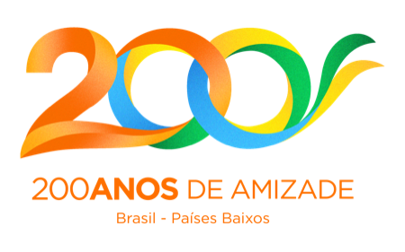

Ponte em Cena
A cultural bridge between Brazil and the Netherlands, built from both ends at once.
Selected in the Cultural Connections 2026 call by the Embassy and the Consulate-General of the Kingdom of the Netherlands. The two countries mark two hundred years of relations this year.


The idea
Ponte em Cena is a cultural exchange methodology between Brazil and the Netherlands, a way of working through the questions that tie the two countries together. The encounter crosses Teatro do Oprimido (Theatre of the Oppressed) with Dutch design methods: one tradition makes the relationship visible, the other makes the process visible.
What comes out is not a report about someone else's culture. It is a shared agenda neither side would have written alone.
Side · Netherlands
Poldermodel, consensus built from the ground up. It exposes the invisible structures of process.
Side · Brazil
Theatre of the Oppressed, embodied action. It exposes the invisible structures of relationship.
Two centuries, three workshops
In 2026 Brazil and the Netherlands complete two hundred years of diplomatic relations. Three workshops across the year, from diagnosis to decision. The subject of each cycle is set together with the Consulate.
The three workshops The methodology